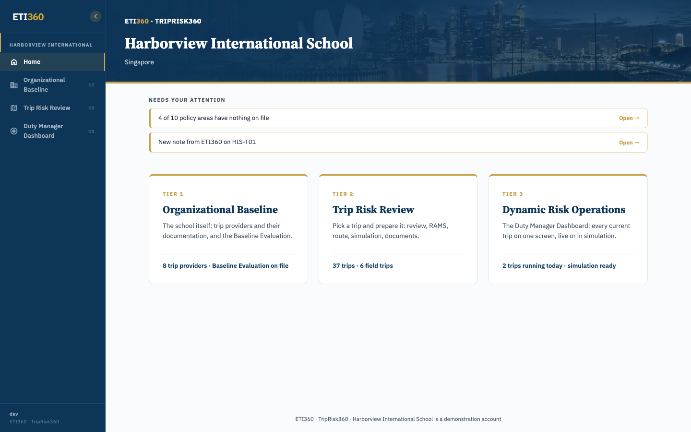
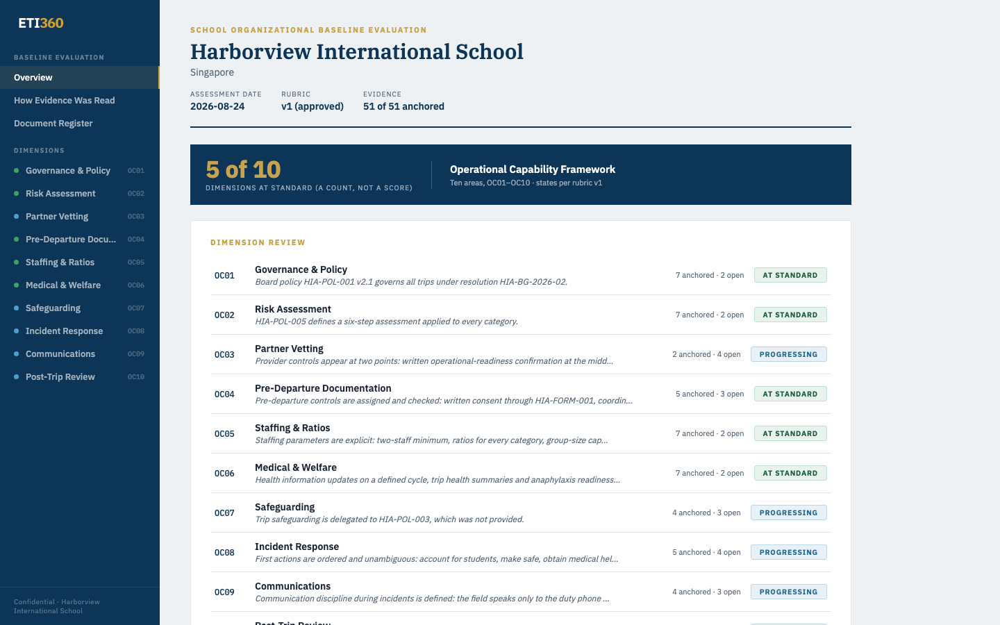
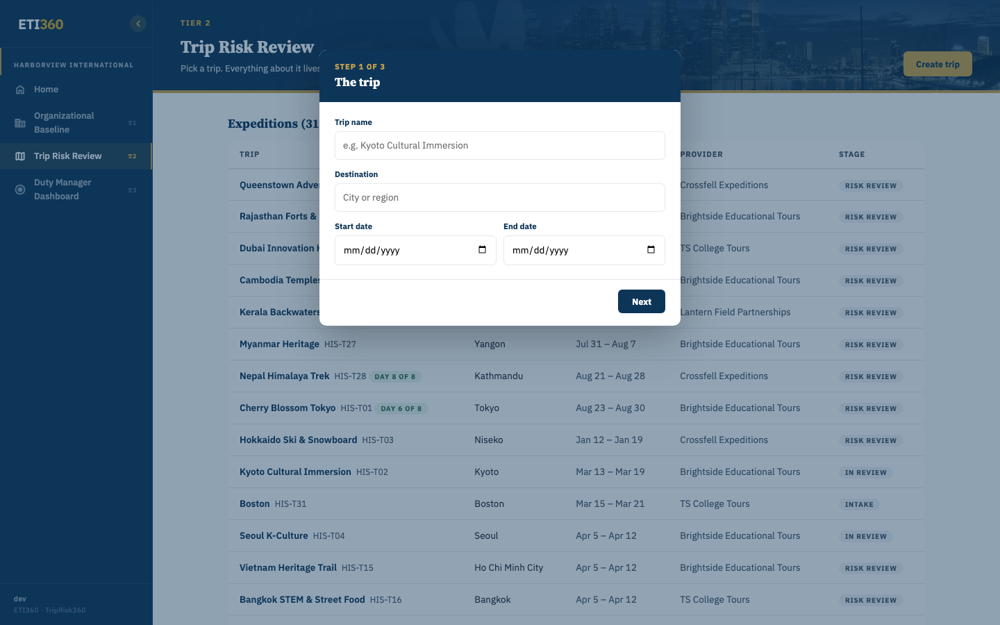
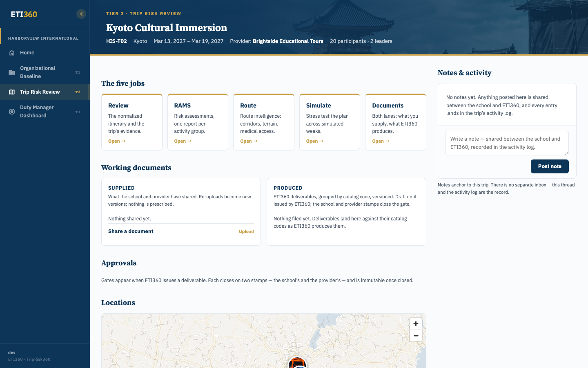
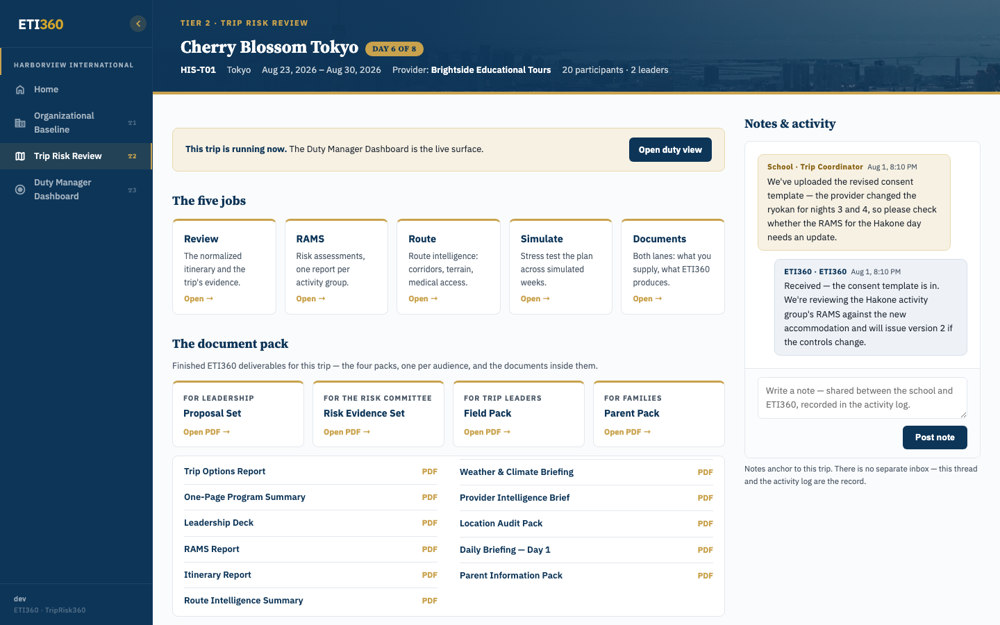
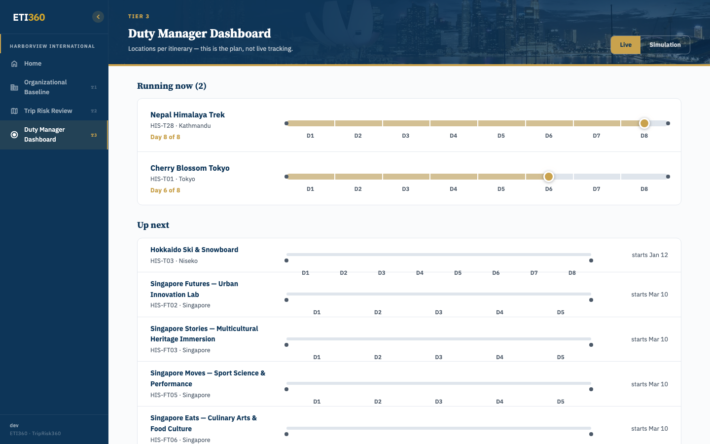

ETI360 turns the trip documents you already have into a decision-ready trip file: a complete itinerary with every hour accounted for, the risk information for each activity group organized the way your assessments will use it, and finished documents for each audience — your leadership, your risk committee, your trip leaders, and your parents. You keep the judgment; we structure the evidence.
This guide is for trip coordinators and school leadership. It follows the portal's own structure — the three tiers of the service — so each part of the guide matches a door in the app. After reading it you'll know how to start a trip, what happens after you do, how to read each document that comes back, and what the Duty Manager Dashboard shows your duty team while the group travels.
Read sections 2–4 once — they explain the working model and the portal. The tier sections are the ones you'll come back to.
This is the most important section in the guide. ETI360 is a service with a platform attached, not software you operate alone. Your part of any task is short: tell us about the trip, share the documents you already have, and review what comes back. The structuring — normalizing the itinerary, verifying every location, compiling the risk information, producing the documents — is our work.
Just as important is what stays yours. The division of labor is deliberate and it never blurs:
| Document | Who writes it | What ETI360 does |
|---|---|---|
| Itinerary | Your provider drafts it | We normalize it hour by hour and verify every location |
| SOPs | Your provider (or your school) | We evaluate them against the trip's activities |
| RAMS | Your school | We supply all the information needed to complete it, one report per activity group |
| Policies | Your school | We file them against the ten practice areas and read them in the Baseline Evaluation |
ETI360 never writes your RAMS and never writes SOPs. The risk assessment carries your school's judgment about your students and your staff — that judgment can't be outsourced, and a document that pretended otherwise would be worth less to your board, not more. What we make sure of is that the person completing the RAMS has everything they need in front of them, organized and verified.

Everything we build lands in your portal, where your review makes it yours — and the portal keeps the record: every document version and every note, in one place your leadership can point to. Formal approval stays in your school's own process.
Your sign-in link arrives by email when ETI360 sets up your school — access is provisioned by us, so there's no self-registration and nothing to configure. Once in, the whole portal is one home page and three doors, and the doors are the three tiers of the service:

- Tier 1 — Organizational Baseline. The school itself: your Baseline Evaluation, your policies and SOPs, your trip providers. Sections 5–6.
- Tier 2 — Trip Risk Review. Every trip, each with its own hub. This is where you'll spend most of your time. Sections 7–12.
- Tier 3 — Dynamic Risk Operations. The Duty Manager Dashboard: every current trip on one screen, live or in simulation. Sections 13–15.
The "Needs your attention" strip on Home is the portal's only to-do surface. If it's empty, nothing is waiting on you.
| Term | Definition |
|---|---|
| Trip hub | One trip's page: the five jobs, the document pack, working documents, and the notes thread |
| Itinerary | The normalized, gap-free day-by-day record — every hour accounted for, transit included, locations verified |
| RAMS | Your school's Risk Assessment & Management Statement for one activity group — completed by you, from the information ETI360 compiles. A trip usually has several |
| Activity group | Activities that run as one operation and share controls — a five-day trek is one group, the city days another |
| SOP | A Standard Operating Procedure — how your provider (or school) actually runs an activity. Supplied by them, evaluated by ETI360 |
| Document pack | The finished deliverables for a trip, bundled by audience: leadership, risk committee, trip leaders, families |
| Supplied / Produced | The two lanes of working documents: what your school and the provider share, and what ETI360 files back |
| Baseline Evaluation | The Tier 1 report on your travel risk management system, read against ten governance practices |
| Duty Manager Dashboard | The live surface your duty team uses while trips travel — covered fully in its own guide |
Tier 1 is about your school, not any one trip. Its centerpiece is the Baseline Evaluation: a reading of your travel risk management system against the ETI360 Operational Capability Framework — ten practice areas, OC01 through OC10, from Governance & Policy to Post-Trip Review. It's built entirely from documents your school supplied; every statement in it anchors to something on file.

How to read it
- Each area shows a state, not a score. At standard means the evidence on file covers the practice; Progressing means the evidence is partial. The headline count ("5 of 10") is a count of states, not a grade.
- "Anchored" and "open" count the evidence. Anchored statements trace to a specific document your school supplied. Open items are questions the supplied documents didn't answer — they identify where evidence is thin; how and whether to address them is your school's call.
- The one-line summary under each area names the actual document doing the work ("Board policy … governs all trips"), so a board reader can go from claim to source in one step.
- "How Evidence Was Read" (sidebar) explains the method; the Document Register lists everything the evaluation drew on.
The evaluation updates when your documents do: file a revised policy and the next assessment reads it. It's the document your board sees, so it never speculates — it reads only what's on file.
The rest of Tier 1 is the standing evidence itself:
- Policy Library. Your institutional policies, filed against the same ten practice areas the Baseline Evaluation reads. It mirrors what your school supplies: versions never overwrite, and nothing is prescribed — there is no checklist of documents you're required to produce.
- SOPs. Standard Operating Procedures come from whoever runs the operation — usually your trip provider, sometimes your school. You share them; ETI360 evaluates them against the activities they cover and the evaluation feeds the trip's risk information (section 11). We never write SOPs — a procedure only works if it describes what the operator actually does.
- Trip providers. Every provider you work with: how many of your trips each runs, what's running now, and the documentation on file for each.

You have a trip coming up and something from your provider — an itinerary PDF, a proposal, an email thread. Either of two paths turns it into a trip:

Path A — create it in the portal
On the Trip Risk Review page, Create trip opens a three-step form: the trip (name, destination, dates), the cohort (year groups and rough numbers — individual student records stay with your school), and the provider (pick a known one, type a new name, or skip it for now).

Path B — email us
Forward the provider's itinerary to danskimin@eti360.com with the dates and rough numbers in a sentence. We create the trip for you and it appears in your list the same way.
Either way, then:
Share what you have
Open the new trip's hub and upload the provider documents — itinerary, SOPs, anything — under Working documents → Supplied, or leave them in the email. Any format is fine; nothing needs reformatting.
We build
We normalize the itinerary hour by hour, verify every named location, evaluate the SOPs supplied, compile the risk information for each activity group, and produce the document pack.
You review
A note lands on the trip when it's ready. Your first look is the itinerary (section 9); your risk lead's first look is the risk information for the RAMS (section 11).
Open any trip from the Trip Risk Review list and you land on its hub. The header carries the essentials — dates, provider, participants — and below it, the five jobs:

| Job | What's behind it |
|---|---|
| Review | The normalized itinerary and the trip's evidence (section 9) |
| RAMS | The risk information for each activity group — everything your RAMS needs (section 11) |
| Route | Route intelligence: corridors, terrain, medical access along the way |
| Simulate | Stress-testing the plan across simulated weeks — and the door to the Duty Manager Simulation |
| Documents | Both lanes: what you supply, what ETI360 produces (section 10) |
A provider itinerary says "morning: temple visit." The normalized itinerary says who is where for every hour of the trip — the temple, the walk to it, the lunch after, the train back — each with a verified location attached. The build identifies unaccounted time and resolves it with you or the provider before the itinerary is issued.


How to read it
- Columns are days; the clock runs down the page. A blank cell would mean unaccounted time — there are none, and that's the point.
- Color is the category, keyed at the foot of the page: activity, meals, land and air transport, free time, accommodation, logistics. Scanning one color answers one question — where the transport legs are, where free time sits.
- Thin rows between blocks are the transitions — the walk, the train — the transitions a duty manager needs and a summary itinerary rarely carries.
- Every block names a real place from the verified location record — addresses included, so a block can be checked against the ground.
Your review confirms what only your school can: are the dates right, are the group numbers right, and has the provider changed anything since you sent us their documents? Everything downstream — the risk information, the route work, every document — is built from this record.
To flag anything, post a note on the trip (section 12). We correct at the source, and every affected document follows.
One trip file, four audiences. The document pack bundles the finished deliverables so each reader gets the version written for them — and each pack is built to be read a different way:

| Pack | Written for | How it's meant to be read |
|---|---|---|
| Proposal Set | Leadership | Decision-first: options compared, then the program summary — ten minutes before a leadership meeting |
| Risk Evidence Set | The risk committee | Evidence-first: the risk information per activity group, route intelligence, location audit — the working papers for your RAMS (section 11) |
| Field Pack | Trip leaders | Day-first: the itinerary report and daily briefings, read the evening before each day |
| Parent Pack | Families | Plain language, front to back: the trip as parents experience it, controls summarized — never the full risk assessment |
Individual documents sit under the packs, so you can hand one PDF to one person without sending the whole set.

The working lanes
- Supplied — what your school and the provider share with us: the itinerary, SOPs, consent templates, anything. Re-uploads become new versions; nothing is prescribed, and there is no checklist to satisfy.
- Produced — what ETI360 files back, versioned, draft until issued.
When we issue a deliverable, the portal records its version and its issue date. Formal approval sits with your school and the provider, in your own processes — what the portal gives your leadership is the dated record of which version was issued, and when.
The RAMS is your school's document. ETI360 does not write it — a risk assessment carries the judgment of the people who know the students and staff involved, and that judgment is yours. What ETI360 does is put everything the person completing it needs in front of them: the risk information for each activity group, compiled from the normalized itinerary, the verified locations, and our evaluation of the SOPs your provider supplied.

The information comes one report per activity group, organized for your school's RAMS method: the five-day trek is one group, the city days another. Each groups its risks the way the activity actually runs, so the person responsible for that part of the trip works from one document.

How to read it
- The overview says why this risk is real on this trip — note the Shibuya Crossing specifics above, not generic boilerplate. If an overview could describe any trip, tell us.
- Controls & mitigations reflect the operation as documented — drawn from the provider's SOPs and the itinerary. They describe what's in place, not what we prescribe.
- Inherent vs. residual risk shows what the documented controls buy. Where the two are close, the controls aren't doing much — worth your attention.
- Emergency actions are the numbered steps if the risk lands anyway, with real facilities from the verified location record.
From information to your RAMS
Your risk lead reads the report for each activity group
Adopting, adapting, or overruling each line — this is where your knowledge of your students and staff comes in.
Questions and corrections go on the trip's notes thread
A control that doesn't match how you run supervision, a hazard you want covered — we revise the information and refile it, versioned.
You complete the RAMS in your school's format
And file it back under Supplied if you want it kept with the trip — many schools do, so the whole risk record lives in one place.
Trips change between booking and departure — dates shift, an activity is swapped, the provider changes a hotel. You tell us once, on the trip's notes thread, and we carry the change through everything it touches: the itinerary, the risk information for the affected activity group, the documents built from both. If the change touches your completed RAMS, the revised information flags exactly what moved, so your risk lead re-checks one section rather than rereading everything.


Notes anchor to the trip — there is no separate inbox to manage. The thread plus the activity log is the record of who said what and when, which matters precisely when a change touches a risk assessment. Email still works whenever it's easier; we post what matters to the thread so the record stays whole.
You never edit five documents to make one change. That's the point of the trip file being one structure: the correction lands at the source and flows down.
On travel days the trip's hub grows a banner — this trip is running now — and the working surface moves to the Duty Manager Dashboard, the third door on your home page.

The dashboard is operated by your team — your duty manager, on your roster, following your procedures. ETI360 builds and maintains the surface and the trip file behind it; we are not a monitoring service. What the duty manager gets is every current trip on one screen, each day's plan from the itinerary, and the incident tools when something needs managing.
The full operating manual is the Duty Manager Dashboard guide. The Duty Manager Simulation is where your duty managers practice on a realistic situation before they hold a live shift.
The Tier 3 door shows every current trip against its day-by-day timeline — running trips first, then what's up next. The Live | Simulation toggle is how your team practices: same surface, simulated feed (see the Simulation guide). Locations shown are per the itinerary — the plan, not live tracking.

The full duty-shift manual — check-ins, weather, declaring and managing incidents — is the Duty Manager Dashboard guide.
When the group lands, the trip's record is complete: the itinerary as planned, the documents as issued, the notes thread, the activity log, and anything the duty shift recorded. Nothing needs assembling after the fact — the file was the record all along.
Running the same trip next season starts from this file, not from a blank page. Send the new dates and whatever changed; the itinerary structure and the evidence record carry forward, and we refresh what the new dates and any operational changes affect. Your school completes the new trip's RAMS through its own process.
- An itinerary detail is wrong. Post a note on the trip. We correct at the source so every document built from it follows — you never fix documents one by one.
- A document shows old details. Check the trip's notes thread for whether the change reached us; issued versions are replaced, not stacked — use the issue date to confirm which version you are reading.
- The risk information doesn't match how you run things. That's exactly what your review is for — flag it on the notes thread and we revise. The information should describe your operation, not an idealized one.
- You can't sign in. Access is provisioned by ETI360 — contact us and we'll re-send your link. There's no self-service password reset to hunt for.
- A trip that should be traveling isn't on the Duty Manager Dashboard. Contact us right away rather than working the shift from memory.
For anything tied to a trip, post on the trip's notes thread — it keeps the record with the trip. For everything else, including starting a new trip by email: danskimin@eti360.com.
v0.3 changes (Dan's rulings, 2026-08-28)
- Guide reorganized by tier — the tier groups are now the guide's spine, matching the portal.
- RAMS/SOP ownership corrected throughout: the school completes the RAMS from ETI360's information; SOPs are supplied by provider/school and evaluated by ETI360. Saved to CLAUDE.md + memory.
- "How to read it" blocks added: Baseline Evaluation (§5), itinerary calendar (§9), risk information report (§11), pack reading styles (§10).
App labels pending the RAMS ruling (Dan to confirm rename)
- Trip hub five-jobs card: "RAMS — Risk assessments, one report per activity group" reads as an ETI360 output; guide describes it as "risk information for your RAMS".
- Document pack: "RAMS Report" PDF title — candidate rename "Risk Information Report" or similar.
Resolved 2026-08-28 (Dan's answers)
- Intake email = danskimin@eti360.com — now in sections 7 and 17.
- ARP removed from school view: non-internal users' five jobs open finished documents, never internal tools (
school_app.py). - Screenshots recaptured under a school-role session (
ETI360_DEV_ROLE=school_admin, port 8102) — no ADMIN sidebar items.
Still open
- Illustrations: full register now at
dev/user-guides/ASSET-REGISTER.md;illo_service_modeldrafted indev/diagram/output/, awaiting Dan's design feedback. - Tone review (
eti360-tone-review) — Dan is running it. - Route figure dropped for now: the served Route Intelligence Summary for HIS-T01 is a stub ("No route files uploaded") — needs demo route content before the guide can show it.